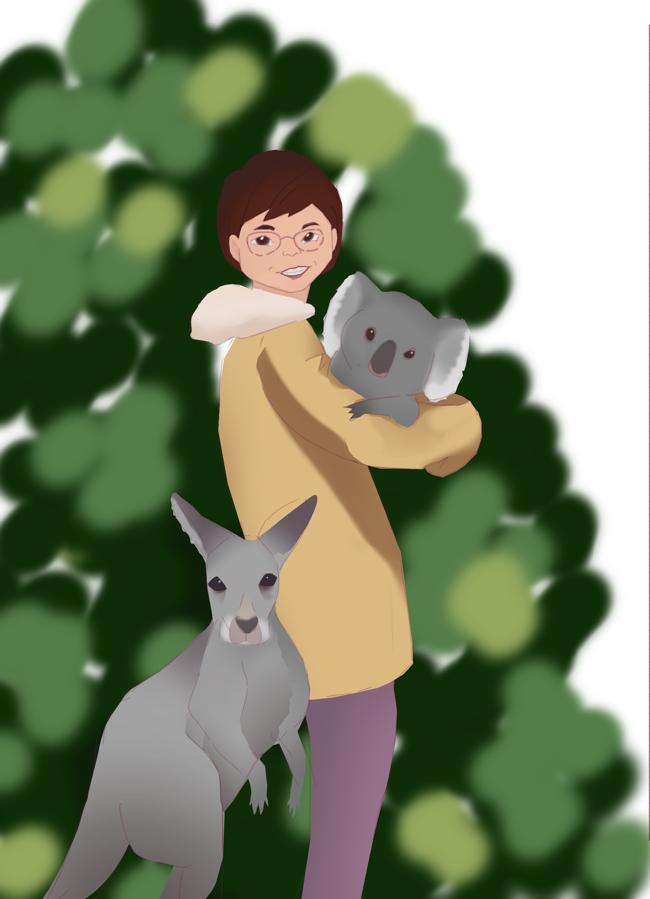
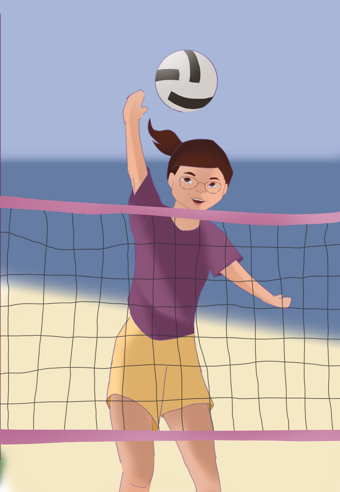

Study Abroad · Australia
悉尼陽光下的另一章一段在海風與陽光裡展開的旅程
十一月的悉尼，藍花楹把整條街染成淡紫。這是 Elaine 等了很多年的遊學，也是她重新安排生活、重新認識世界的一章。

Chapter 01 · Sydney
把時間留給陽光、樹木和海
十一月的悉尼，藍花楹把整條街染成淡紫。清晨，彩虹吸蜜鸚鵡在窗外吱吱喳喳，Elaine 推開窗，深深吸了一口帶著海水味的空氣。這是她等了很多年的遊學。早上，她在語言學校上課；下午，她把時間留給這片土地的陽光、樹木和海。
她最愛皇家植物園。海港就在眼前，巨大的無花果樹撐開濃密的樹蔭，樹根像一隻隻手，穩穩抓住泥土。她坐在樹下曬太陽，閉上眼慢慢呼吸。陪她練口語的三位英文系同學，Ken, Faye 和 Ivan，說她像在冥想。她笑：「喜樂嘅心乃係良藥，曬太陽都係。」「乜又係你哋！」
第二週，她坐火車上藍山。山谷裡一片尤加利樹，樹葉散發的油霧在陽光下泛著淡藍，遠看整座山都籠著一層薄紗。三姊妹岩靜靜站在山谷邊，像守望了千萬年。Elaine 沒有選最長的步道，只走一段較短的。藝術系的 Macy 在觀景台打開畫簿，Elaine 也接過一支炭筆。她說自己畫蘋果都不像蘋果，可那天她畫的三姊妹岩，線條雖然歪斜，卻把山谷的開闊都畫了出來。

Chapter 02 · Beyond The Blue Mountains
世界的美麗，也一直在自己身上
在步道上，她遇到一位當地婆婆，每星期都來走這條路。兩位長者一見如故。婆婆問 Elaine 為甚麼還來讀書，Elaine 用廣東話細說自己半工半讀、在大學工作三十多年的故事。翻譯系的 Serena 在旁傳譯，連 Elaine 那份的語氣也譯得準確又自然。婆婆聽完握住 Elaine 的手，說自己也是七十歲才學會游泳！
夜裡，山上沒有街燈。讀電腦的阿豪很快弄了一個協助 Elaine 仰望天上星座的程式，替她找到南十字星。Elaine 抬頭看了很久，看來那種美在這剎那確實是看不到盡頭的。
那晚，她在旅館寫明信片。寫作系的 Ryan 問她寫給誰，她說寫給十六歲的自己：「想告訴她，你在此之後換了很多條路，但並不會後悔。」
最後一個週末，Elaine 走 Bondi 至 Coogee 的海岸步道。砂岩懸崖被海浪磨出一層層紋路，浪花拍上礁石，又慢慢退回去。走到一半，遠方海面忽然噴起一道白色水柱——是一條座頭鯨正向南遷徙。Elaine 停下腳步，看得出神。
走到盡頭，她坐在石階上曬太陽。「半退休唔係離開個世界，係有時間重新安排自己嘅生活。」她望著海說。澳洲確實是美不勝收，但 Elaine 在某一刻發現，世界的美麗也其實一直帶在自己身上。浪聲一陣接一陣，像在回應她。
澳洲站完 · 願陽光與海風，繼續陪她走下一段路